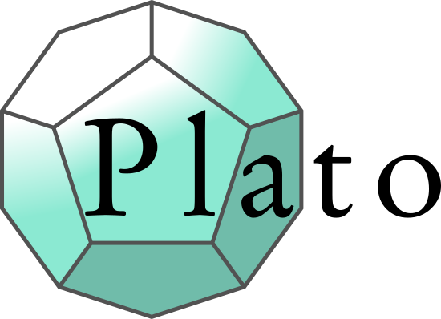

Contents:
Getting Started
User Guide
API reference
Contributing
License
Plato
»
Index
Index
A
|
C
|
D
|
F
|
G
|
H
|
M
|
P
|
R
|
S
|
U
|
W
A
AttributeProvider (class in plato.providers.base)
C
Context (class in plato.context)
copy() (plato.context.Hasher method)
D
derivedfield() (in module plato.formclasses)
digest() (plato.context.Hasher method)
F
fn (in module plato.formclasses)
formclass() (in module plato.formclasses)
FromFaker (class in plato.providers.faker)
G
get_root_context() (in module plato.context)
H
Hasher (class in plato.context)
M
meta (plato.context.Context attribute)
module
plato
plato.context
plato.formclasses
plato.providers
plato.providers.base
plato.providers.common
plato.providers.faker
P
parent (plato.context.Context attribute)
plato
module
plato.context
module
plato.formclasses
module
plato.providers
module
plato.providers.base
module
plato.providers.common
module
plato.providers.faker
module
Provider (class in plato.providers.base)
ProviderProtocol (class in plato.providers.base)
R
rng (plato.context.Context attribute)
S
sample() (in module plato.formclasses)
(plato.providers.base.AttributeProvider method)
(plato.providers.base.Provider method)
(plato.providers.base.ProviderProtocol method)
(plato.providers.common.Shared method)
seed (plato.context.Context attribute)
seed() (in module plato.context)
Shared (class in plato.providers.common)
subcontext() (plato.context.Context method)
U
update() (plato.context.Hasher method)
W
WithAttributeAccess (class in plato.providers.base)
v: 0.1.0
Versions
On GitHub
Repository